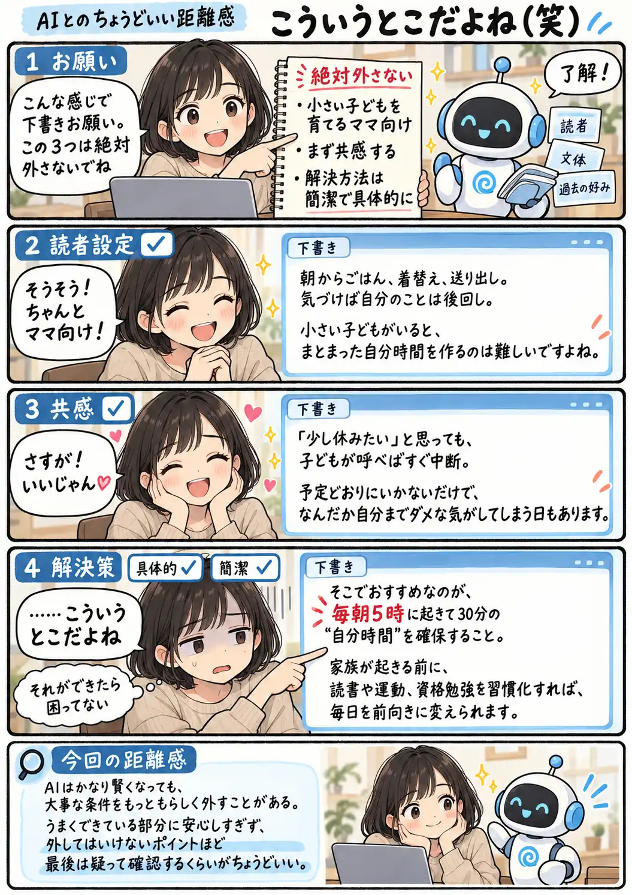

#151
こういうとこだよね（笑）
そこまで完璧だったのに……

メモ
AIの出力が最初からズレていれば、こちらも警戒して確認できます。むしろ難しいのは、ほとんどが期待どおりに仕上がっている時かもしれません。
読者設定も文章の雰囲気も合っていると、「ちゃんと分かってくれている」と感じてチェックが甘くなりがちです。でも、もっともらしい文章の中に一つだけ大きなズレが混ざることもあります。良くできている時ほど、大事な条件だけは最後に見直したいところです。
今回の距離感
AIはかなり賢くなっても、大事な条件をもっともらしく外すことがある。うまくできている部分に安心しすぎず、外してはいけないポイントほど最後は疑って確認するくらいがちょうどいい。